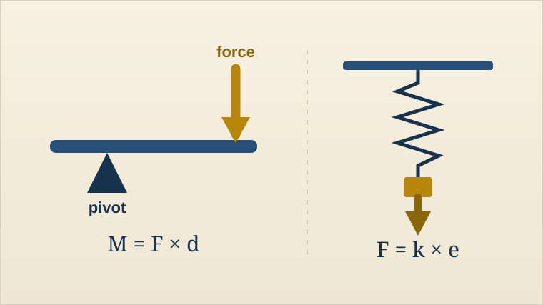

Year 9 Science
Turning and stretching forces
Moments and balancing, work done, and Hooke's law for springs (Topics 42–43).

Lessons
Open Year 9 Forces Lab · moments, work and springs →
Lesson 01
Lesson 02
Lesson 03
Lesson 04
Lesson 05
Lesson 06
Lesson 07
Lesson 08
Levers and moments
The turning effect of a force, and moment = force × perpendicular distance.
Open lesson
Balancing moments
The principle of moments, and a practical to test when a lever balances.
Open lesson
Work done
Work = force × distance, its unit the joule, and when no work is done.
Open lesson
Stretching forces: simulation
Extension as the change in length, and how force changes a spring's extension.
Open lesson
Planning a Hooke's law investigation
Variables, a numbered method, safety and a suitable results table.
Open lesson
Hooke's law
F = k × e, the force–extension graph and the limit of proportionality.
Open lesson
Hooke's law questions
Calculations with F = k × e and interpreting force–extension graphs.
Open lesson
Forces: Assessment Point 1
A 30-mark check across the forces unit, then feedback and improvement.
Open lesson